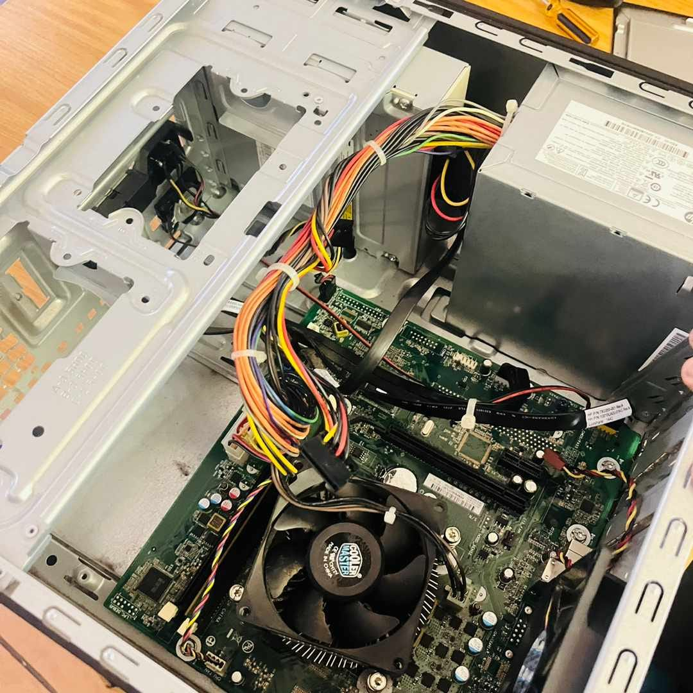

Web Development
Building clean, responsive, and efficient websites tailored to your personal or business goals. Our hub is open to develop websites for all businesses and organisations, using the tools of your choice. However our main focus is in using HTML, CSS and JavaScript. But we do use applications like Wix, it all depends on our Clients preferances, because at the end of the day we are doing this for you.
- Testing of page performance
- Frontend programming
- Debugging
- Site optimization
IT Support
Comprehensive physical and remote IT support, hardware configurations, and technical troubleshooting in terms of networking:
- Systems & Hardware: Installation, configuration, and maintenance of computer
hardware, printers, and operating systems
(Windows 10/11, familiarity with Linux/macOS).
- Networking Fundamentals: Proficient in TCP/
IP, DNS, DHCP, and LAN/WAN setup and
monitoring.
- Technical Support: Onsite and remote IT
support via ManageEngine, AnyDesk,
TeamViewer, and Remote Desktop.
- Information Security: Strong familiarity with
cybersecurity practices, user access control
(Active Directory), and compliance with IT
security policies.
- Operations & Maintenance: Routine system
updates, backups, diagnostics, and
troubleshooting of complex hardware/software
issues.
